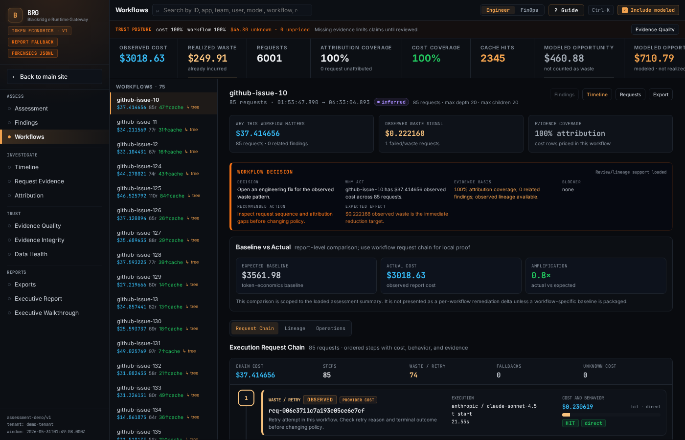

Attribution Tells You Where To Look. Forensics Tells You What Happened.
Attribution is table stakes. The missing layer is forensic reconstruction of what happened inside the workflow: the decision chains, waste classes, and evidence trails that explain why AI cost what it did.
Every AI cost conversation eventually reaches the same question: which workflow generated the spend? That question has an answer. Gateways log requests. Tracing tools capture spans. Vendor dashboards show usage. Attribution is becoming table stakes. The harder question is what happened inside the workflow that created the cost.
Why AI workflows break the normal cost model
Most software spending still has a fairly legible shape. More users create more traffic. More traffic consumes more compute. More compute increases the bill.
AI workflows break that shape.
A coding agent investigating a bug might gather context, generate code, run tests, hit a failure, retry with a different approach, invoke external tools, escalate to a larger model, explore multiple branches, and abandon several of them before it reaches a useful result.
The final commit looks like one piece of work. Underneath it, the execution path contains dozens of model calls, tool calls, retries, branches, and decisions. Each has a cost.
A customer support workflow has the same problem. Retrieval, classification, routing, summarization, escalation, and tool execution may all happen inside what the customer experiences as one response.
The spend is generated inside the workflow.
Where attribution stops
Attribution answers the first useful question: where did the money go?
This workflow. That team. This model. That customer.
That answer matters. It also stops early.
Knowing that a coding-agent workflow cost $18,000 last month does not tell you how much of that spend shipped useful work, how much came from retries, how much came from abandoned branches, how much came from context bloat, or how much came from fallback to a larger model after a cheaper one failed.
Attribution gives you the address. It does not reconstruct the event.
Two developers may use the same AI coding assistant every day. One generates a few dollars of inference cost. The other triggers hundreds of dollars through retry amplification, context expansion, tool failures that cascade into model escalation, and planning branches that burn tokens before being abandoned.
An attribution dashboard may show both as coding assistant spend.
The behavioral cause of the difference is invisible.
What forensics reconstructs
- Which model invocations contributed to the result. Which were retries. Which duplicated prior work. Which fallback paths were triggered by upstream failures. Which context expansions were necessary. Which ones were bloat. Which tool calls hit dead ends. Which branches were explored and abandoned. Which decisions caused spend to escalate.

That missing layer is forensics.
Forensics means evidence-backed reconstruction of the execution path and the economic behavior inside it.
The difference between attribution and forensics is the difference between knowing a database was expensive and understanding the query plan that made it expensive.
There is a hierarchy
Billing tells you what you paid. Telemetry tells you what ran. Attribution tells you where the spend came from. Forensics tells you why it happened, whether it was justified, and what to fix.
Most organizations have the first three layers in some form. Almost no one has the fourth.
Controls are not diagnosis
That is why AI cost conversations keep collapsing into blunt controls.
Budgets. Caps. Approvals. Throttles.
Those controls reduce risk. They buy time. They do not teach the organization what to fix.
A budget cap on a coding workflow does not reveal that retry amplification is driving the overage. A token limit on a support workflow does not reveal that context bloat doubles the cost of every escalation.
Controls constrain spend. Forensics explains it.
The goal is not to make AI cheap. The goal is to make AI spend explainable, defensible, and optimizable.
The Blackridge bar
Northwatch Systems is building Blackridge for that missing layer.
Blackridge reconstructs AI workflow economics and produces forensic receipts: evidence that connects cost to behavior, waste classes to root causes, and savings estimates to confidence levels.
High-confidence findings get prioritized. Low-confidence findings show what data is missing. No fake precision.
The bar is simple
CFO-readable. Engineer-defensible.
Request an AI spend assessment and a founder will look for likely leak classes before anyone touches production.
Request assessment